Велика кількість акторів з Великої Британії та Ірландії зіграли чи озвучили персонажів в кіносерії про Гаррі Поттера, заснованій на серії книг Джоан Роулінг.
В усіх фільмах Денієл Редкліфф виконував роль Гаррі Поттера, Руперт Ґрінт — Рональда Візлі і Емма Вотсон — Герміони Ґрейнджер. Серед інших варто відзначити також таких відомих акторів як
Гелена Бонем Картер, Джим Бродбент, Джон Кліз, Роббі Колтрейн, Ворвік Девіс, Рейф Файнз, Майкл Гембон, Брендан Глісон, Річард Ґриффітс, Річард Гарріс, Джон Герт, Джейсон Айзекс, Міріам Марголіс,
Гелен Маккрорі, Ґе
рі Олдмен, Алан Рікман, Фіона Шоу, Меггі Сміт, Імелда Стонтон, Девід Тьюліс, Емма Томпсон і Джулі Волтерс. Лише тринадцять акторів з'являлись в усіх восьми фільмах серії в одній і тій ж ролі.
На прем'єрі фінального фільму серії Гаррі Поттер і Смертельні реліквії: Частина 2, що відбулась 7 липня 2011 року в Лондоні Джоан Роулінг виголосила промову,
в якій похвалила талант семи молодих акторів фільму, яких вона назвала «Великою Сімкою»; це були Редкліфф, Ґрінт, Вотсон, Том Фелтон, Метью Льюїс, Еванна Лінч і Бонні Райт.
Акторський склад
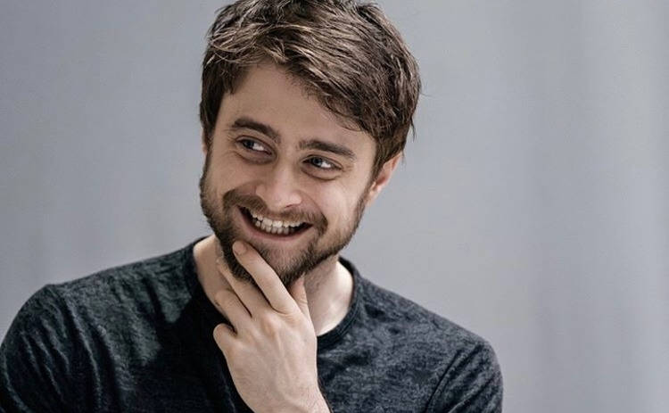
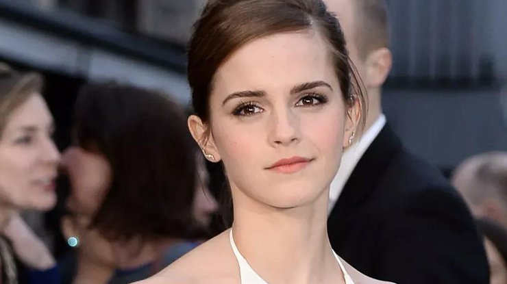
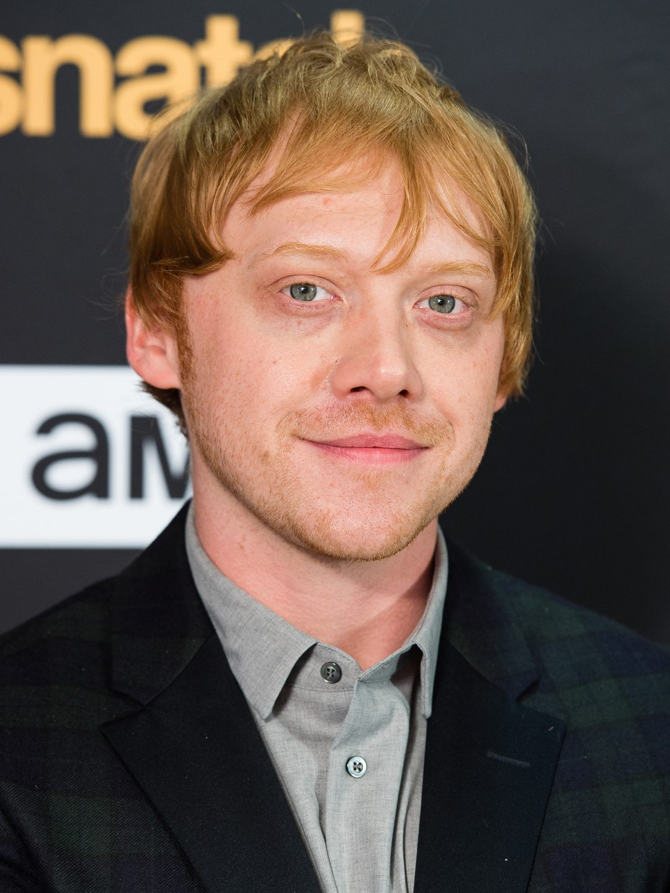
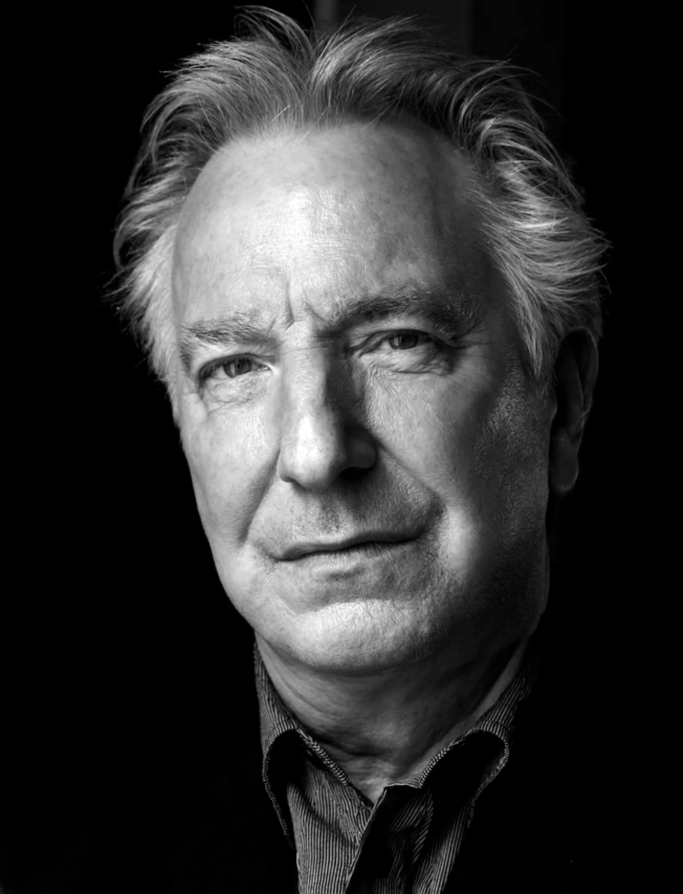
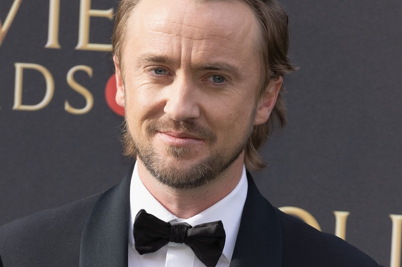
Де́нієл Дже́йкоб Ре́дкліф нар. 23 липня 1989, Гаммерсміт, Лондон —
британський актор театру та кіно. Відомий завдяки ролі Гаррі Поттера у фільмах за мотивами серії романів англійської письменниці Джоан Роулінг.
2009 року був занесений до Книги рекордів Гіннеса як найбільш високооплачуваний актор десятиліття. Отримав іменну зірку на голлівудській Алеї слави в Каліфорнії за внесок у кіномистецтво.
2004 року, крім роботи в кіно, виконав роль в лондонській версії постановки музичної комедії «The Play What I Wrote».
З лютого 2007 року по лютий 2009 року грав в іншій театральній постановці — «Еквус», по знаменитій п'єсі Пітера Шеффера, режисер Теа Шеррок спочатку в Вест-Енді, а потім на Бродвеї
(Бродгерст-театр), 5 вересня 2008 — 9 лютого 2009.
Éмма Шарло́тта Дюéрр Вóтсон нар. 15 квітня 1990, Париж, Франція — британська акторка кіно, театру та озвучення, модель
і активістка з прав людини, феміністка, амбасадорка доброї волі ООН-Жінки, у 2014 році запустила міжнародну правозахисну кампанію «HeForShe».
Здобула популярність роллю Герміони Ґрейнджер у фільмах про Гаррі Поттера, яку отримала роль у 9 років, до цього беручи участь у шкільних виставах.
З 2001 до 2008 року знялася в восьми фільмах поттеріани, виборовши численні нагороди та понад 10 мільйонів фунтів стерлінгів. Зіграла у фільмі «Балетні туфельки»
показаному Бі-Бі-Сі в грудні 2007 року (аудиторія — 5,2 млн глядачів). Озвучила персонажку анімаційного фільму «Пригода Десперо», прем'єра якого відбулася 2008 року.
Руперт Александр Ллойд Ґрінт народився 24 серпня 1988, Гартфордшир, Велика Британія — британський актор. Відомий як виконавець ролі Рона Візлі
у фільмах за мотивами серії романів англійської письменниці Джоан Роулінг.
У кінці травня 2000 року, кіностудія «Warner Brothers» оголосила про відкриття кастингу на три головні ролі в екранізації романа Дж. К. Роулінг «Гаррі Поттер і філософський камінь».
Як кандидати на головні ролі розглядалися лише британські діти у віковій категорії від 9 до 11 років. Спочатку претендентам пропонували прочитати вголос запропоновану їм сторінку з книги,
потім зімпровізувати сцену прибуття учнів до Гоґвортсу, і у третій стадії діти просто читали вголос декілька сторінок із сценарію.
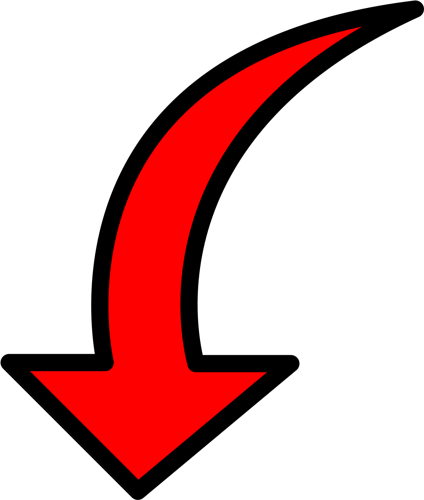
Алан Сідней Патрік Рікман (народвися 21 лютого 1946 — помер 14 січня 2016) — британський театральний та кіноактор, актор озвучування.
Відомий за роллю Северуса Снейпа в серії фільмів «Гаррі Поттер».
Після закінчення академії Алан рік виступав у Королівському Шекспірівському театрі, співпрацював з Crucible Theatre та Bristol Old Vic, знімався у телефільмах.
Роль Обадіа Слоупа у «Хроніках Барчестера» (1982) принесла йому популярність у Великій Британії.
1985 року актор повернувся до Королівського Шекспірівського театру, щоб зіграти цинічного маркіза де Вальмона у виставі «Небезпечні зв'язки» Крістофера Хемптона.
«Рікман народжений для цієї ролі», — писали критики після прем'єри. Головний виконавець швидко став кумиром англійської публіки. Наступного року постановку запросили на Бродвей,
де Рікмана помітив продюсер Джоел Сілвер, який запропонував йому виконати роль злочинця у «Міцному горішку» Джона Мактірнена.
Том Фелтон — британський актор. Найкраще відомий глядачеві завдяки ролі Драко Мелфоя у фільмах про Гаррі Поттера.
Окрім акторства, Том займається музикою. Як вже було сказано, ще в дитинстві батьки виявили гарний голос хлопця, тому він співав у хорах.
У 2008 році вийшов перший альбом авторських пісень хлопця «Time well spent». Через кілька місяців з'явилася і друга робота Фелтона «All I need».
Том активно займається популяризацією своєї творчості, зокрема, показує ролики із власною грою на гітарі на сайті www.youtube.com.
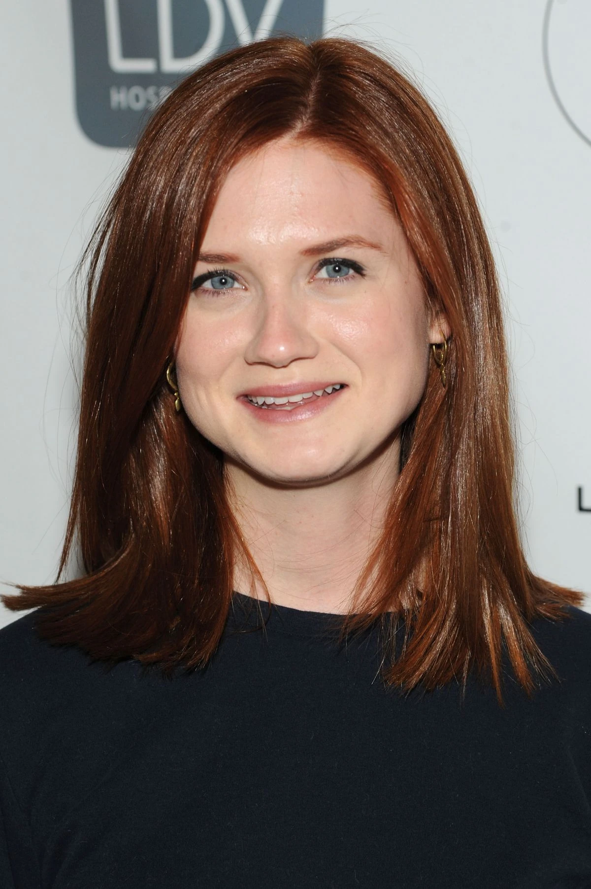
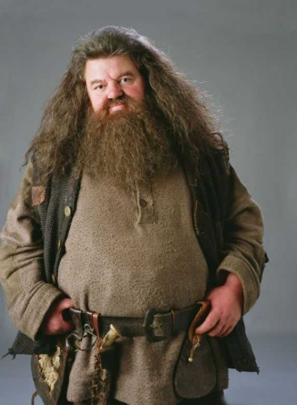
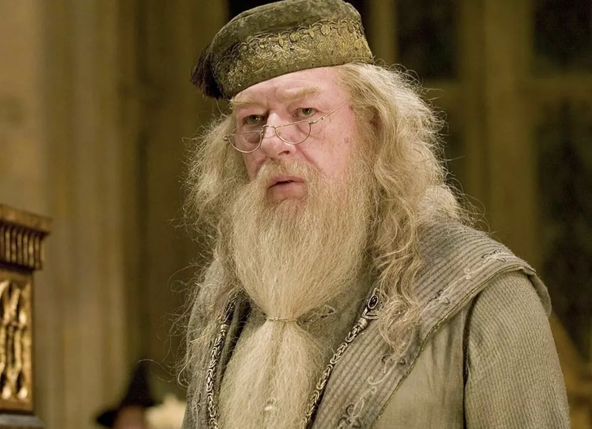
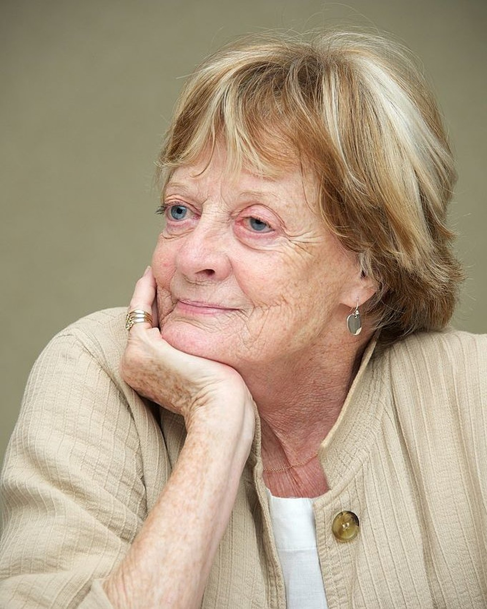
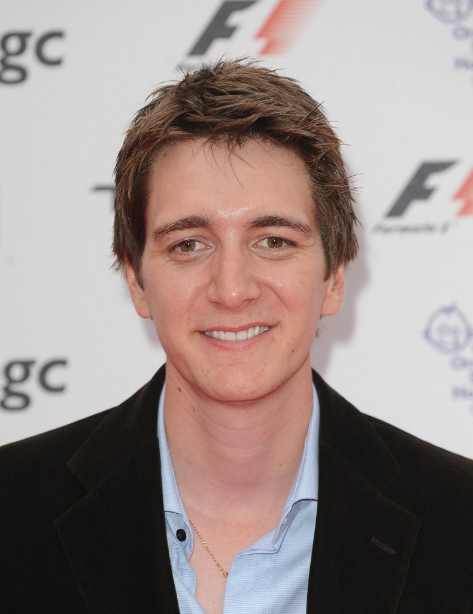
Бонні Франческа Райт - нар. 17 лютого 1991, Лондон, Англія. Бонні Франческа Райт народилася в Лондоні, у сім'ї Шейли Тікує і Гарі Райта, які за професією ювеліри і володіють
власною компанією «Wright & Teague». У неї є старший брат на ім'я Люїс.
У вільний час Бонні подобається танцювати, малювати, подорожувати і грати на музичних інструментах, таких як піаніно і блокфлейта. Серед видів спорту вона захоплюється футболом, плаванням,
тенісом, кінним спортом, серфінгом, легкою атлетикою, катається на ковзанах і велосипеді.
Роббі Колтрейн - (нар. 30 березня 1950, Ратерглен, Південний Ланаркшир, Шотландія — 14 жовтня 2022) — британський (шотландський) актор.
Колтрейн був, серед іншого, відомий своєю роллю Рубеуса Геґріда у фільмах про Гаррі Поттера. Його великий прорив стався у телесеріалі Cracker.
Колтрейн офіційно одружився з Роною Геммелл 11 грудня 1999 року. У пари було двоє дітей: син Спенсер (нар. 1992) і донька Еліс (нар. 1998). Колтрейн і Геммелл розлучились у 2003 році.
Сер Майкл Джон Гембон - (нар. 19 жовтня 1940, Дублін, Ірландія — 27 вересня 2023, Ессекс, Англія) — британський актор. Багаторазовий номінант премій «Еммі»,
«Золотий глобус», БАФТА та інших. Після смерті Річарда Гарріса грав роль Альбуса Дамблдора у фільмах про Гаррі Поттера.
Дама Марґарет Наталі Сміт - ( 28 грудня 1934) — провідна англійська акторка театру та кіно повоєнного часу. Дворазова володарка премії «Оскар».
Семиразова лавреатка премії BAFTA: в номінації «Найкраща акторка» 4 рази, в номінації «Краща роль другого плану» — одна, спеціальні нагороди — дві. Власниця чотирьох нагород премії «Еммі».
Кавалер Ордена кавалерів пошани та Дама-Командор Ордена Британської імперії.
Джеймс Фелпс — британський актор. Народився 25 лютого 1986 року у місті Бірмінгем. Має брата-близнюка Олівера Фелпса. Здобув славу, граючи Фреда Візлі у кінофільмі про Гаррі Поттера.
Фанати дали йому прізвисько «Джем». Народився у Великій Британії. З'явився на світ на 13 хвилин пізніше за свого брата Олівера. Вони були єдиними дітьми у сім'ї. Джеймс навчався у
початковій школі Little Sutton і середній школі Артура Террі разом зі своїм братом. Ще у школі брати почали займатися акторством.
У 2000 році їх мати дізналася про прослуховування у Лідсі, хлопці одразу налаштувалися брати участь. Через декілька днів братам сказали, що вони будуть грати Фреда і Джорджа Візлі у
екранізації книги про Гаррі Поттера, якою вони захоплювалися з малих літ.
Олівер Мартін Джон Фелпс (нар. 25 лютого 1986, Бірмінгем, Велика Британія) — британський актор.
Популярність акторові принесла роль Джорджа Візлі в екранізації книги «Гаррі Поттер». Має брата-близнюка Джеймса Фелпса. Крім «Гаррі Поттера», з'явився також у 3 сезоні серіалу
«Пітер Кінгдом вас не покине». Нині закінчив роботу над заключною частиною «Поттеріани».
10 секретів створення Гаррі Поттера, про які ви не знали.
"SCREENRENT"
На знімальному майданчику завжди відбуваються закулісні драми, і фільми про Гаррі Поттера, які знімали протягом десяти років, не є винятком.
Фільми про Гаррі Поттера знімалися більше десяти років, і за цей час ми побачили безліч закулісних кадрів, на яких наші улюблені учасники акторського складу возилися та були чарівними
на знімальному майданчику. Судячи з того, що ми побачили, усі на знімальному майданчику, як актори, так і знімальна група, порозумілися.
Тим не менш, з моменту виходу останнього фільму з’явилася низка захоплюючих історій про деякі витівки, які відбувалися поза камерою. Оскільки це майже ідеальний і згуртований акторський
склад, більша частина драми була зі світлого боку, але були деякі моменти, які балансували на межі катастрофи.
10. Стівен Спілберг відмовився від режисури «Філософського каменю».
Хоча більшість шанувальників погоджуються, що вибір акторів для Гаррі Поттера був майже ідеальним, деякі фанати мали проблеми з низкою режисерів, обраних для керування
фільмами протягом багатьох років.
Одним із режисерів, якого спочатку запросили поставити перший фільм, був Стівен Спілберг. Він витратив кілька місяців на розробку фільму і навіть розглядав можливість зробити його
анімаційним серіалом, але зрештою вирішив припинити виробництво.
Спілберг сказав, що грати в Гаррі Поттера було б все одно, що «стріляти в качок у бочці», оскільки це був гарантований удар. Він пояснив, що хотів працювати над проектом, який був би
більш складним і таким, який певним чином торкався його. Далі він керував А.І. замість нього в головній ролі знявся Хейлі Джоел Осмент.
9. Між Геленою Бонем Картер і Еммою Томпсон були деякі суперечки
На початку 90-х Емма Томпсон і Кеннет Брана були владною парою. Вони розлучилися після шести років шлюбу, коли Томпсон дізнався, що Брана та Гелена Бонем Картер завели роман.
Мабуть, їхній роман почався на зйомках фільму Мері Шеллі «Франкенштейн» 1994 року — Томпсон і Брана розлучилися наступного року.
Хоча спочатку між двома актрисами була погана кров, Томпсон поділився, що вони «помирилися багато років тому», тому можна з упевненістю припустити, що між ними не було драми на знімальному майданчику. .
Вона також сказала, що, поміркувавши, вона зрозуміла, чому Брана любив їх обох, оскільки дві жінки «трохи божевільні та трохи викликають моду».
8. Ж.К. Роулінг довелося боротися за МакГонеґел
Кіноадаптація складна. Неможливо догодити кожному фанату — неминуче хтось буде засмучений виключенням певного персонажа або відсутніми сценами, які здавалися невід’ємними для розвитку персонажа.
Хоча вона не писала сценарії для фільмів про Гаррі Поттера, Дж.К. Роулінг залишалася безцінним джерелом у процесі написання.
Кілька разів Роулінг скасовувала деякі зміни, які сценарист Стів Кловз хотів внести у фільм. Однією із змін стала дуель між Макґонеґел і Снейпом у «Дарах смерті, частина 2».
Кловз хотів замінити Макґонеґел Гаррі, вважаючи, що протистояння між Снейпом і Гаррі додасть більшої ваги сцені, коли Гаррі дізнається про трагічне минуле Снейпа та любов його колишнього професора до його матері.
Проте Роулінг вважала важливим дати Макґонеґел свій момент і змусити її взяти активну участь у бою.
7. Актора, який грав Кребба, звільнили
Як помітили багато шанувальників, персонаж Вінсента Кребба був замінений в «Гаррі Поттер і Дари смерті» на Блейза Забіні, іншого слизеринця з року Драко. Хоча персонаж Блеза з’являвся в книгах,
він спочатку не був у сцені «Кімнати вимог».
Джеймі Вейлетт, актор, який зіграв Кребба, мав з’явитися в цій сцені, але його не попросили повернутися до франшизи, оскільки він був заарештований у 2009 році за вирощування деяких заборонених речовин.
Хоча його вже зняли з акторського складу, у 2011 році його знову заарештували за крадіжку в супермаркеті під час Лондонських заворушень. Здається, неприємний актор Слизерина був настільки ж неприємним
поза знімальним майданчиком.
Однією з найпривабливіших якостей Гелени Бонем Картер є те, як вона повністю занурюється у свої ролі, особливо в більш ексцентричні та масштабні ролі.
Незважаючи на те, що фанати можуть не погоджуватися з вибором кастингу для фільмів про Гаррі Поттера, майже всі шанувальники погоджуються щодо кастингу Бонем Картер на роль божевільної Беллатриси
Лестранж.
На жаль, в один зі своїх найбільш захоплених моментів вона зайшла занадто далеко і випадково пробила барабанну перетинку Метью Льюїса. Травма сталася, коли її героїня мала погрожувати Невілу
чарівною паличкою.
Бонем Картер пояснює це: «Помилково я тицьнув йому у вухо. Я думав, що можу помахати чарівною паличкою, наче наконечником Q, і прочистити йому вухо. Як би катувати це. Але, на жаль, він підійшов
до чарівної палички, коли я її штовхав». Очевидно, Льюїс був настільки добрим, що не сказав їй, як це погано, аж через кілька днів.
5. Студія скоротила героїню мадам Хуч, тому що вона була скупою
У першому фільмі про Гаррі Поттера було кілька знакових сцен, одна з яких – перший урок Гаррі з польоту. Кіноманів познайомила з польотами мадам Гуч, інструктор з пілотування в Гоґвортсі та
суддя з квідичу.
Незважаючи на те, що її персонаж з’являвся протягом решти серіалу в книгах і залишався одним із найвидатніших професорів у романах, актриса, яка зіграла Гуч, з’явилася лише в «Фіцерському камені».
За словами Зої Ванамейкер, актриси, яка зіграла Хуч, Warner Bros. була неймовірно скупою на зарплату. В інтерв'ю вона сказала, що студії доведеться «підвищити свої ставки», якщо вони хочуть,
щоб вона знялася у другому фільмі.
Очевидно, що Warner Bros. не вважали, що її персонаж був достатньо важливим, щоб збільшити її зарплату, і її персонаж був виключений з франшизи.
4. Алан Рікман і Джейсон Айзекс намагалися вкрасти реквізит зі знімального майданчика
За словами Джейсона Айзекса, Алан Рікман був професіоналом у крадіжці предметів зі знімального майданчика. Мабуть, у перший день зйомок на знімальному майданчику «Грінготтс»
Рікман вкрав тонну монет із гоблінського банку, не моргнувши й оком.
Підбадьорений успіхом свого колеги у крадіжці майна Warner Bros., погляд Айзекса зупинився на примірнику «Щоденного віщуна», одному з тисяч примірників, доступних на знімальному майданчику.
Айзекс підійшов до режисера Девіда Єйтса і запитав, чи може він взяти одну з копій додому. Йейтс сказав, що може, але коли Айзекс спробував вийти зі студії з Пророком у сумці, монтажник сказав,
що Йейтс хоче повернути реквізит. Ісаакс описав обмін як незручний, особливо тому, що він нічого не отримав від нього.
3. Деніел Редкліфф зламав 80 паличок під час зйомок
Для будь-якої продукції відділ реквізиту зазвичай створює кілька копій одного реквізиту. Деякі використовуються для крупних планів, а інші призначені для використання як резервні копії
на випадок, якщо оригінальний реквізит буде пошкоджено. Те ж саме стосується і костюмів. Наприклад, під час зйомок Деніел Редкліфф нібито перебрав 160 пар окулярів Гаррі.
Він також пройшов через майже 80 паличок, і швидкий погляд на деякі закулісні кадри зйомок Редкліффа показує нам, чому саме йому знадобилося так багато паличок.
Мабуть, Редкліфф трохи вередував на знімальному майданчику і любив використовувати чарівну паличку як барабанну паличку. Він неодноразово стукав чарівною паличкою по різних поверхнях, і з часом палички
ламалися. На щастя, департамент реквізиту був на цьому, і вони завжди мали напоготові резервний.
2. Алан Рікман не підпускав акторів до свого BMW
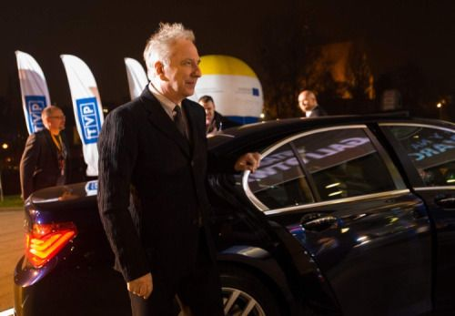
Коли ви більше десяти років знімаєтеся з групою молодих акторів, ви не можете очікувати, що вони не будуть возитися з вашими речами, навіть якщо ви такий шанований актор, як Алан Рікман.
З якоїсь причини під час зйомок «Кубка вогню» Руперт Ґрінт і Метью Льюїс були в одній зі старих машин Рікмана, і їм вдалося розлити молочний коктейль у згаданій машині.
Через деякий час Рікман отримав апгрейд і купив собі новий BMW. Коли почалися зйомки фільму «Орден Фенікса», Рікман заборонив Ґрінту та Льюїсу наближатися до його машини на 5 метрів,
безсумнівно, побоюючись, що молоді актори знову проллють щось у його нові колеса.
Офіційної заборони на знімальний майданчик не було, але ми впевнені, що Рікману вдалося залякати акторів, щоб вони трималися подалі.
Ймовірно, одна з найкращих закулісних історій Гаррі Поттера – це коли Альфонсо Куарон, режисер фільму «В’язень Азкабану», попросив основне тріо, Деніела, Емму та Руперта, написати есе
з описом своїх героїв.
Це есе мало допомогти акторам глибше дослідити своїх персонажів і дати їм деяке уявлення, яке може бути корисним під час зйомок.
Відповідаючи своїм персонажам, Емма написала довгий, детальний 16-сторінковий нарис, Деніел написав короткий, але глибокий і проникливий нарис на одну сторінку, а Руперт взагалі не писав есе, міркуючи, що Рон зіпсує завдання.
Він сказав Куарону, що це «Рон» — не робити цього. Очевидно, що актори чудово зрозуміли характери персонажів, і це свідчить про це.
.webp)
.webp) 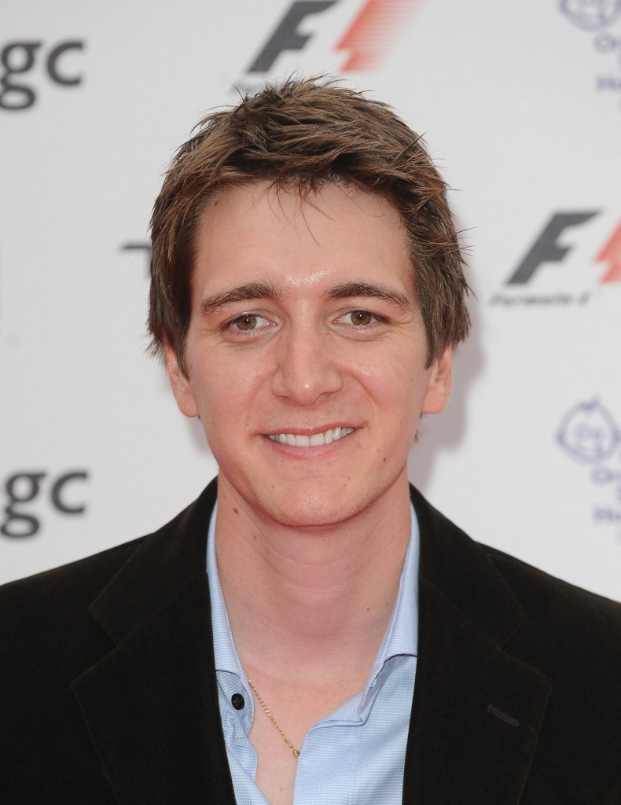
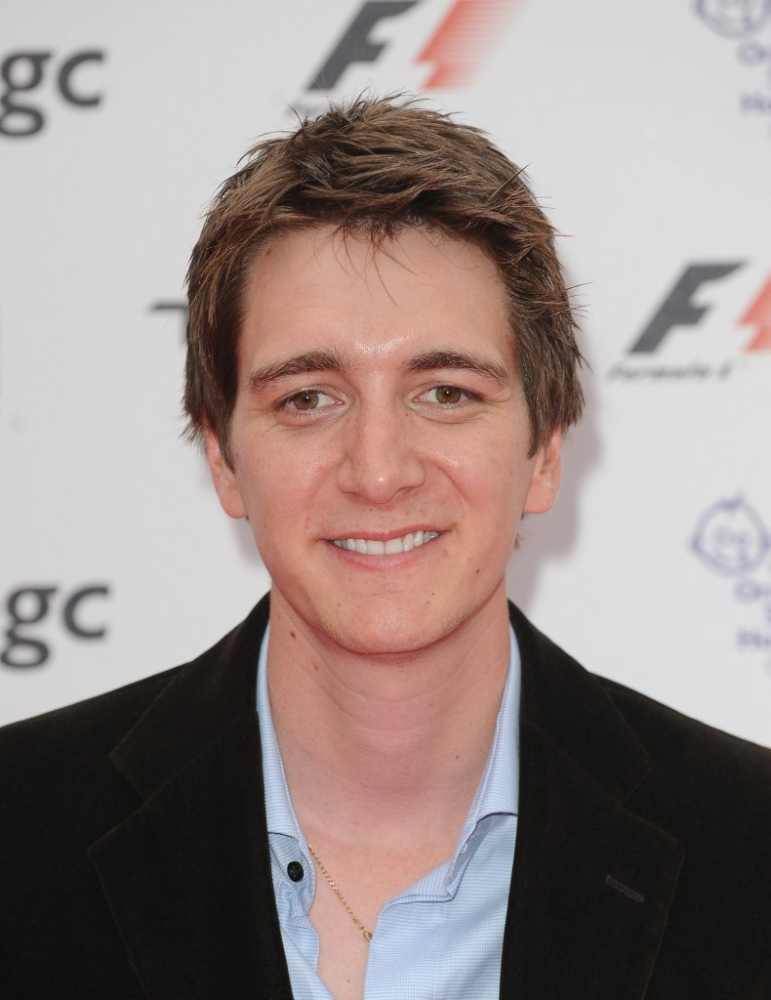